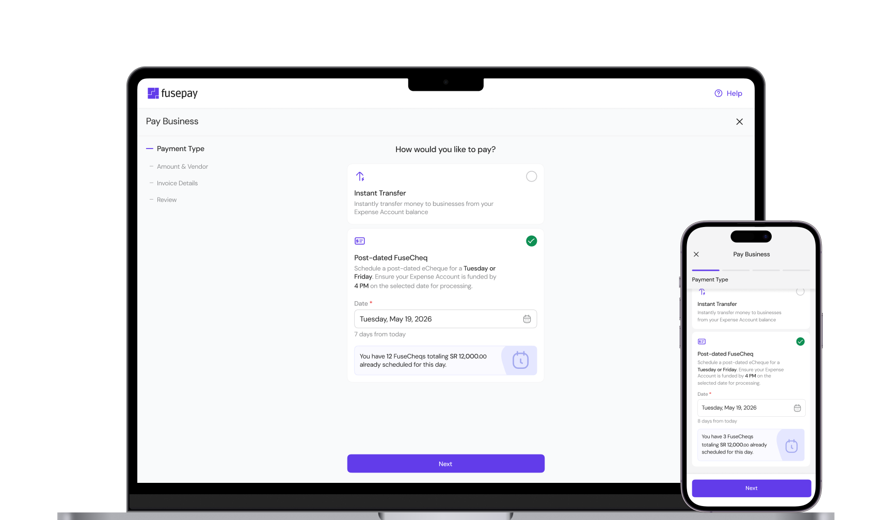
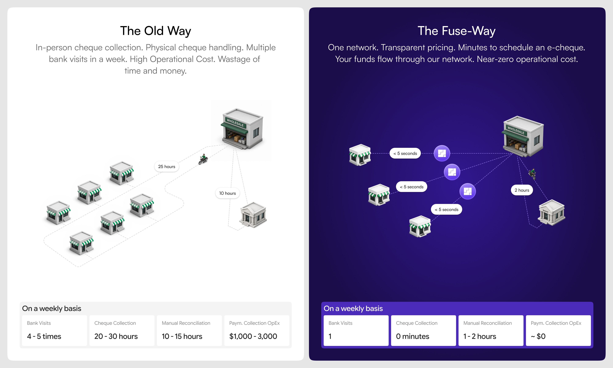
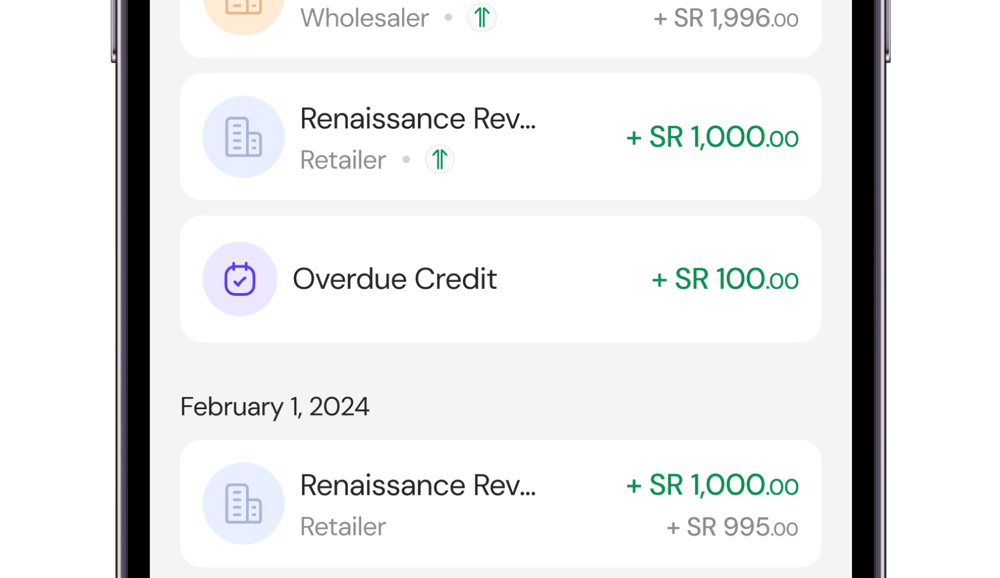
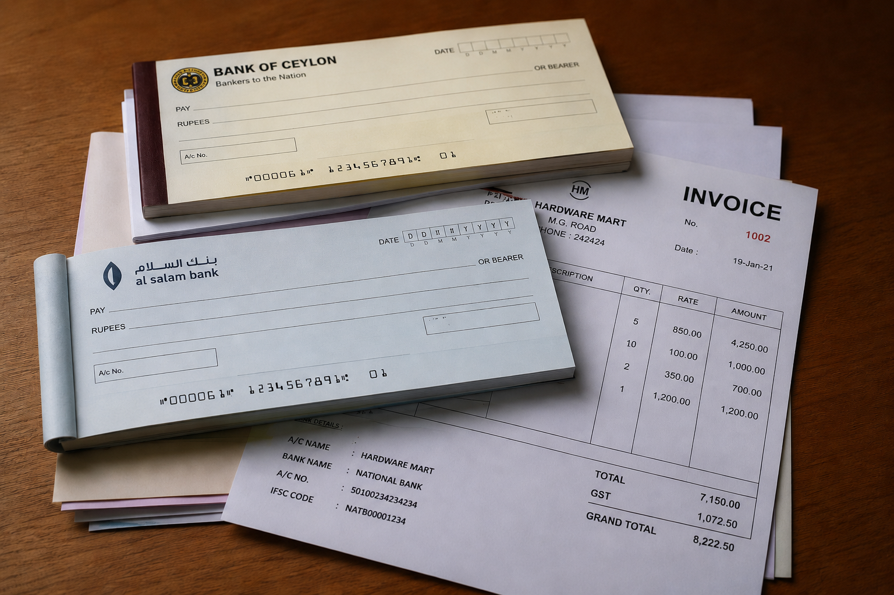
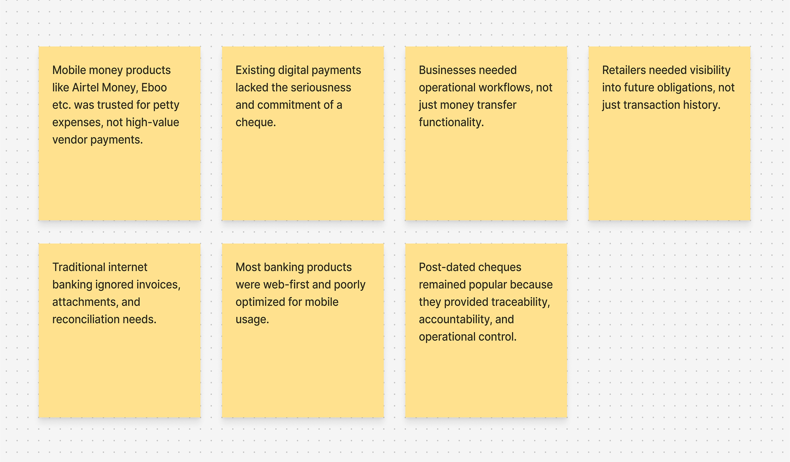
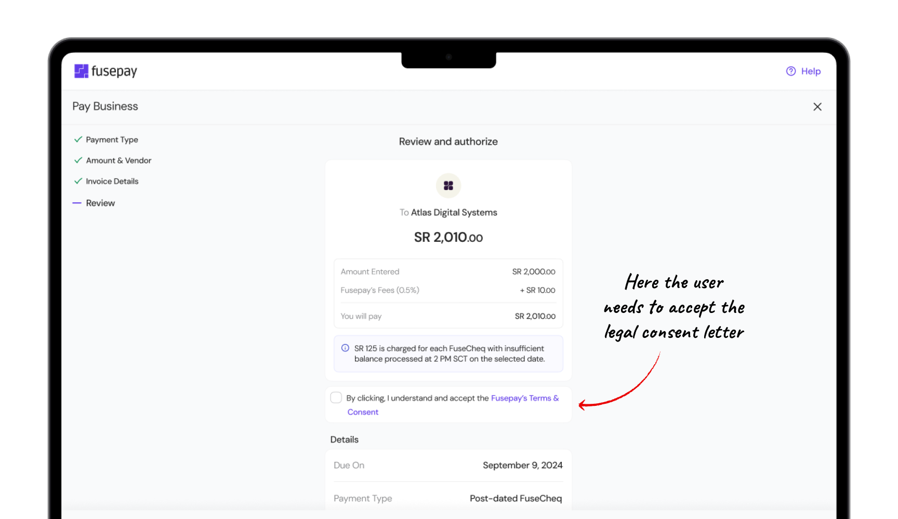
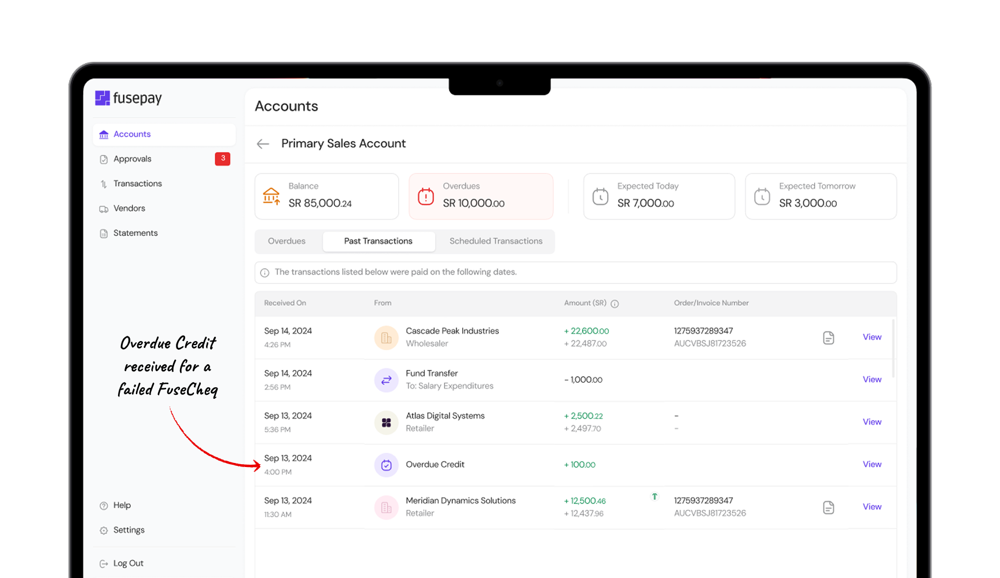

Designing Trust at Fusepay
From Decades-Old Paper Cheques to Efficient e-Cheques
'FuseCheq' is a digital post-dated payment instrument designed to allow retailers to schedule future payments to wholesalers in a way that felt familiar to issuing a paper cheque, but with several improvements.


The Problem
In Seychelles, more than 80% of B2B transactions between retailers and wholesalers were still happening through cash and post-dated paper cheques. Many of these businesses processed over $7,000+ in monthly transactions, while some wholesalers handled annual invoice volumes worth $3-25 million and retailers managed yearly inventory purchases between $500,000-1.5 million.
In a typical workflow, retailers issued cheques to delivery staff, wholesalers manually recorded and stored them, and finance teams deposited them at banks on the due date. If funds were insufficient, the cheque bounced, forcing wholesalers to retrieve it, contact the retailer, and coordinate repayment manually.
The process was slow, stressful, and heavily operational. Retailers worried about giving employees access to signed cheques, while wholesalers spent significant time tracking payments and visiting banks. Despite these inefficiencies, businesses still trusted cheques because they carried legal enforceability and acted as proof during payment disputes.

The Solution
They needed something that felt familiar, trustworthy, and legally serious enough to replace the cheque. That became the starting point for FuseCheq.
FuseCheq became a digital post-dated payment instrument designed specifically for the way B2B payments work in Seychelles. It allowed retailers to schedule future payments to wholesalers in a way that felt familiar to issuing a paper cheque, but with several improvements.
The goal was not to make the product feel futuristic. The goal was to make it feel obvious.
- Reducing Days of Operational Coordination to a Few Clicks
What once required physical movement, manual coordination, and repeated bank visits could now be completed digitally in a few clicks.
Before FuseCheq, post-dated cheque payments involved physical cheque handling, manual tracking, repeated bank visits, and repayment coordination for bounced transactions, creating significant operational overhead for both retailers and wholesalers.
FuseCheq transformed this into a digital workflow where businesses could schedule payments, attach invoices, prioritize transactions, and track obligations in minutes, reducing days of manual coordination to just a few clicks.

(Click to enlarge)
- Daily Bank Visits Became Part of Running the Business
Reduced the need for retailers and wholesalers to visit the bank from 5 days a week to 2 days a week.
Retailers could issue paper cheques for any date, forcing wholesalers to visit the bank almost every business day to deposit and process payments. This created one of the biggest operational inefficiencies in the existing workflow.
Instead of replicating that behavior digitally, FuseCheq introduced fixed processing windows on Tuesdays and Fridays, reducing bank visits from five days a week to two predictable payment cycles. This made the workflow easier to plan, easier to manage, and significantly more operationally efficient for both retailers and wholesalers.
- Familiarity over modern fintech approach
Do not force businesses to learn a completely new behaviour. Digitize the behaviour they already trust, then make it significantly better.
Users could choose between an Instant Transfer or a Post-dated FuseCheq and select a future payment date similar to issuing a traditional post-dated cheque. They could then select a vendor, enter the amount, choose an expense account, and upload invoices or supporting documents for reconciliation and AML compliance.
Before scheduling the payment, users reviewed all transaction details, accepted a legally binding Guarantee Letter, and authorized the transaction using a PIN.
- The Trust Layer Behind Paper Cheques Was Missing Digitally
Turned scheduled digital payments into enforceable financial commitments with a transparent & legal Terms & Consent Letter.
Whenever a retailer scheduled a FuseCheq payment, they digitally authorized a consent letter. Once the payment was scheduled, the retailer could not casually cancel it or change the date.
This gave the wholesaler a sense of commitment similar to a paper cheque, but with a much better digital audit trail.
- Businesses couldn't control payment sequencing during low liquidity
Enabled retailers to dynamically prioritize payments based on real-time business urgency.
With paper cheques, banks processed payments in a fixed order, giving retailers no control over which cheque cleared first when balance was low. This created business risk, especially when important or urgent payments bounced.
To solve this, we introduced a prioritization flow where retailers could drag and reorder FuseCheq payments within a processing day based on priority. This gave businesses direct control over cash flow sequencing and payment execution.
It was not just a UX improvement. It was a business-critical feature.
- Incentivizing wholesalers on failed scheduled payments
Designed a balanced failed-payment system that not only reduced retailer penalties but also compensated wholesalers for operational inconvenience.
Banks often charged retailers around $35 to $70 for bounced cheques, which could sometimes wipe out the profit margin on the transaction. To reduce this burden, FuseCheq lowered the failed payment fee to around $9, while also introducing a compensation model where most of the fee was credited to the wholesaler for the inconvenience caused.
This created a more balanced system where retailers faced lower penalties, while wholesalers felt more comfortable accepting FuseCheq as a trusted digital alternative.

Since we launched…
In November 2025, we launched the Fusepay B2B app in private beta, followed by a full public launch in April 2026. Since the beta launch, we have onboarded close to 30 businesses and processed over $200,000 in transaction volume.
The product is now live and actively processing new transactions every day. So far, all scheduled FuseCheq transactions have been successfully processed without failures or technical issues.
The Context
When I first spoke to the co-founders of Fusepay in late 2024, one problem immediately stood out to me. Both founders came from family business backgrounds in Seychelles, with direct exposure to retail and wholesale operations. They had seen firsthand how businesses still relied heavily on cash and paper cheques to pay each other. What made the problem even more interesting was the scale and urgency behind it.
In Seychelles, more than 80% of B2B transactions between retailers and wholesalers were still happening through cash and post-dated paper cheques for payments. Many of these businesses processed over $7K+ in monthly transactions, yet their financial operations still relied on spreadsheets, physical bank visits, paper records, and manually coordinated cheque payments. Some wholesalers processed annual invoice volumes worth approximately $3 - 25 million, while many retailers managed yearly inventory purchases ranging between $500K - 1.5 million.
At the same time, government and banking stakeholders were moving toward phasing out paper cheques. That created a clear but difficult product challenge. Retailers and wholesalers needed an alternative. But not just any digital payment product. They needed something that felt familiar, trustworthy, and legally serious enough to replace the cheque. That became the starting point for FuseCheq.
The Problem
A typical workflow looked like this -
- A retailer would order goods from a wholesaler, often on post-dated payment terms. Since the shop owner was not always physically present, they would often leave a blank cheque book with an employee. The employee would fill in the cheque details, add the date, and hand it over to the wholesale delivery staff.
- The wholesale employee would then bring the cheque back to the office. The finance team would manually record it, track the due date, and store the cheque until it was ready to be deposited.
- On the due date, someone from the wholesale business would physically go to the bank, fill out a deposit slip, submit the cheque, and wait for the bank to process it.
- If the retailer had enough money in the account, the cheque would clear.
If not, the cheque would bounce due to insufficient funds. The wholesale employee would then need to collect the bounced cheque from the bank, bring it back to the office, update the records, call the retailer, request cash payment, physically collect the cash, and return the cheque.
This process was expensive, slow, manual, and frustrating for both sides.
For retailers, it created a major control problem. Owners often had to trust employees with blank cheques because they could not be present in the shop all the time. That opened up serious risks around employee fraud and misuse.
For wholesalers, it created operational overhead. They had to send people to the bank almost every business day, manually track post-dated cheques, follow up on bounced payments, and handle unnecessary back-and-forth.
But despite all these problems, businesses still trusted cheques. The reason was simple. A paper cheque carried legal weight. If a retailer dishonored a cheque, the wholesaler had a document they could use as evidence and escalate legally.
That trust was missing from normal digital payment methods.

The Design Challenge
The challenge was not simply to 'make cheques digital'. If the product felt too new or too abstract, adoption would be difficult.
We had to design something that -
- Felt familiar to retailers and wholesalers.
- Gave wholesalers confidence that the payment commitment was serious.
- Gave retailers better control over payment scheduling.
- Reduced the need for daily bank visits.
- Created a clear authorization trail.
- Made failed payments cheaper and easier to manage.
- Helped both sides move to digital without feeling like they were changing their entire way of working.
So the design principle became clear -
Do not force businesses to learn a completely new behaviour. Digitize the behaviour they already trust, then make it significantly better.
Research & Discovery
We spoke to both retailers and wholesalers because digitized post-dated payments had to work for both sides of the transaction.
The wholesaler needed to trust the instrument enough to accept it as a replacement for a paper cheque. The retailer needed to feel in control, because they were the ones issuing the payment and managing cash flow.
One of the biggest insights from the research was that wholesalers were not hesitant about digital payments because they disliked technology. They were hesitant because the existing digital alternatives in the market were not designed for operational B2B payments.

With internet banking or normal bank transfers, a payment could be delayed, forgotten, or cancelled. There was no strong digital equivalent of "this retailer has formally committed to pay me on this date."
So we introduced…
FuseCheq became a digital post-dated payment instrument designed specifically for the way B2B payments work in Seychelles. It allowed retailers to schedule future payments to wholesalers in a way that felt familiar to issuing a paper cheque, but with several improvements.
- Reducing Days of Operational Coordination to a Few Clicks
What once required physical movement, manual coordination, and repeated bank visits could now be completed digitally in a few clicks.
Before FuseCheq, processing a post-dated cheque was not a simple payment action. It was a long operational workflow involving retailers, wholesale staff, finance teams, and banks. Once a retailer issued a paper cheque, the wholesaler had to physically transport it back to the office, manually record it, track the due date, store it securely, and later visit the bank to deposit it. If the cheque bounced due to insufficient funds, the process became even more expensive and time-consuming. Teams had to collect the bounced cheque, update records, contact the retailer, coordinate repayment, and often physically collect cash again.
This entire workflow created unnecessary operational overhead for both sides of the transaction.
FuseCheq transformed this into a digitally authorized payment workflow that could be completed in minutes. Retailers could schedule future payments, attach invoices, prioritize transactions, and track upcoming obligations directly from the product. Wholesalers no longer needed to manually collect, store, or deposit paper cheques. What previously required days of coordination, repeated bank visits, paperwork, and operational effort was reduced to a predictable digital workflow with near-zero operational movement and significantly lower processing costs.
(Click to enlarge)
- Daily Bank Visits Became Part of Running the Business
Reduced the need for retailers and wholesalers to visit the bank from 5 days a week to 2 days a week.
One important behavior we discovered was that retailers could issue paper cheques for any date on the calendar. Because of this, wholesalers often had to visit the bank every business day to deposit cheques due on that day.
This was one of the biggest operational inefficiencies in the system. Instead of copying that part of the paper cheque experience exactly, we redesigned it.
In FuseCheq, e-cheques could only be issued for specific processing windows: Tuesdays and Fridays.
This small design decision created a huge operational improvement. It helped retailers become more disciplined about when payments would be processed.
More importantly, it reduced the need for retailers and wholesalers to visit the bank five days a week. Instead of checking and depositing cheques every business day, payment processing could now be structured around two predictable weekly cycles. That reduced bank visits from five days a week to two days a week. It also made the workflow easier to understand, easier to plan around, and easier to operationalize for both sides.
- Familiarity over modern fintech approach
Do not force businesses to learn a completely new behaviour. Digitize the behaviour they already trust, then make it significantly better.
The goal was not to make the product feel futuristic. The goal was to make it feel obvious.
A retailer should feel...
"This works like the cheque I already understand, but gives me more control."
A wholesaler should feel...
"This gives me the same trust as a cheque, but saves my team a lot of time."
The workflow begins when the user selects the "Pay Business" option and chooses between an Instant Transfer or a Post-dated FuseCheq. When the user selects the Post-dated FuseCheq option, they are presented with a date picker to choose the future execution date for the transaction, intentionally replicating the experience of issuing a traditional post-dated paper cheque.
In the next step, the user selects the vendor they want to pay, followed by the payment amount. One of the important product decisions in this flow was how transaction fees should be communicated.
Initially, we charged 0.1% of the transaction amount to the sender and 0.3% to the receiver. However, during usability testing, users reacted negatively to percentage-based fees, especially for high-value transactions, because the fee amount appeared psychologically expensive when displayed as a percentage of large payments. Based on feedback from early users, we redesigned the pricing structure by introducing a flat transaction fee of SCR 5 for the sender, while the receiver fee remained at 0.3% with minimum and maximum fee caps. This made the cost feel significantly more predictable and acceptable to businesses.
The user then selects the Fusepay account they want to pay from, allowing them to choose between different Expense accounts depending on available balance.
The third step focuses on payment documentation and reconciliation. Users can optionally add order numbers, invoice numbers, and upload supporting documents such as invoices, receipts, images, or PDFs related to the transaction. However, for payments of SCR 50,000 or more, document uploads become mandatory to comply with AML (Anti-Money Laundering) requirements.
In the final review step, users are presented with a complete summary of the transaction details before scheduling the payment. To proceed, they must accept the Letter of Legal Consent (Guarantee Letter), which acts as the legal binding behind the post-dated FuseCheq. Once accepted, the user completes PIN authorization to officially schedule the transaction.
- The Trust Layer Behind Paper Cheques Was Missing Digitally
Turned scheduled digital payments into enforceable financial commitments with a transparent & legal Terms & Consent Letter.
Whenever a retailer scheduled a FuseCheq payment, they digitally authorized a consent letter. Once the payment was scheduled, the retailer could not casually cancel it or change the date. This gave the wholesaler a sense of commitment similar to a paper cheque, but with a much better digital audit trail.

- Businesses couldn't control payment sequencing during low liquidity
Enabled retailers to dynamically prioritize payments based on real-time business urgency.
Another important problem came up around cheque clearing.
With paper cheques, if multiple cheques were due on the same day and the retailer had only enough balance to cover some of them, the bank would process them in an order the retailer could not control. That created real business risk.
A retailer might have one cheque linked to a critical supplier they needed to restock from immediately. But if the bank processed another cheque first, the important cheque could bounce. The retailer had no control over which payment should pass first.
So we designed a prioritization flow. If a retailer had multiple FuseCheq payments due on the same processing day, they could choose the order in which those payments should be processed.
They could simply drag and drop payments based on business priority within a specific processing day. This gave retailers something they never had with paper cheques: control over cash flow sequencing.
It was not just a UX improvement. It was a business-critical feature.
- Incentivizing wholesalers on failed scheduled payments
Designed a balanced failed-payment system that not only reduced retailer penalties but also compensated wholesalers for operational inconvenience.
Paper cheque failures were also expensive.
Banks often charged retailers SCR 500 to SCR 1,000 for a bounced cheque. In many cases, that fee could wipe out the entire profit margin of the goods purchased using that cheque. This made cheque failures painful and punitive for retailers.
With FuseCheq, we significantly reduced the failed transaction fee to SCR 125. But we also wanted to make the product more attractive for wholesalers, because failed payments created inconvenience for them too.
So we designed an incentive model. When a FuseCheq failed due to insufficient balance, SCR 125 was deducted from the retailer, and SCR 100 was passed to the wholesaler as compensation. This created a more balanced system.
Retailers paid a much lower penalty compared to bank cheque return fees. Wholesalers received compensation for the inconvenience, which made them more comfortable accepting FuseCheq as a digital alternative.
This was one of the key design decisions that made the product work for both sides of the transaction.

Since we launched…
In November 2025, we launched the Fusepay B2B app in private beta, followed by a full public launch in April 2026. Since the beta launch, we have onboarded close to 30 businesses and processed over $200,000 in transaction volume.
The product is now live and actively processing new transactions every day. So far, all scheduled FuseCheq transactions have been successfully processed without failures or technical issues.